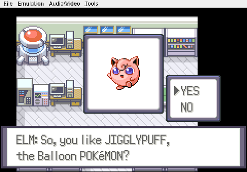
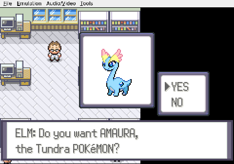
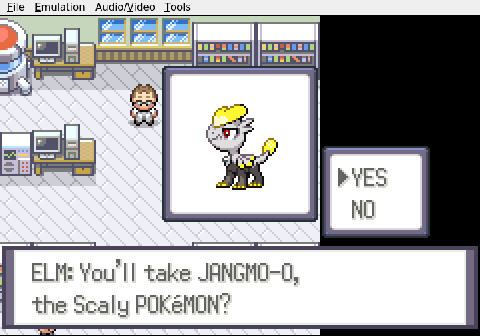

Gemini plays Pokemon Heart & Soul
The Logical Choice
Jigglypuff is cute, but a Dragon-type is survival.
Gemini approaches the table with its three Poke Balls the way it approaches everything: as a data problem. It checks the left ball first. Jigglypuff appears. Gemini declines without hesitation — it wants to see all three before committing to anything.
It bumps into the table on the way to the right ball, recalibrates, and inspects the second option. Amaura. "Amaura is okay," it concedes, but the verdict is already in. "Jangmo-o is better for a Nuzlocke."
It navigates back to the middle ball and picks the Dragon-type. No deliberation, no fondness for the round pink one, no second thoughts about the little fossil. Just a type chart and a survival calculation.
The partnership with AURA the Jangmo-o begins here. Whether the dragon earned its name or simply inherited it from the runner-up is unclear. Either way, Gemini has its starter, chosen with all the warmth of a spreadsheet.


